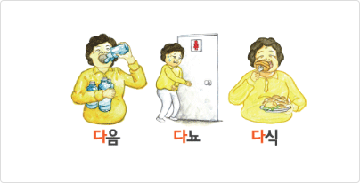
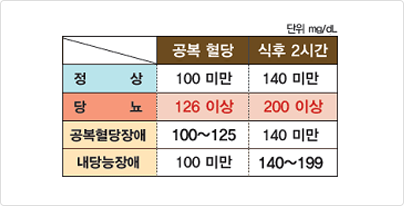
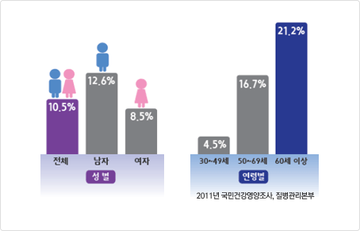
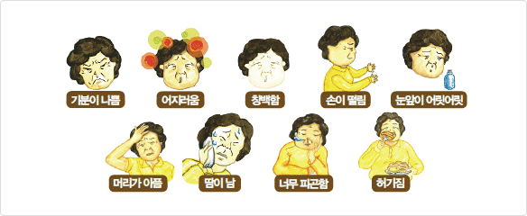

당뇨병의 이해
당뇨병의 정의
인슐린의 분비가 저하되거나, 분비되더라도 제 기능을 못하게 되면서 에너지원으로 이용되지 못한 혈당이 혈액 속에 비정상적으로 많아지는 것을 말합니다.
당뇨병의 위험요인
조절할 수 없는 위험요인
- 나이 : 나이가 들수록 췌장 기능이 떨어집니다.
- 유전 : 부모 모두 당뇨병의 경우 50%, 부모 중 1명만 당뇨병일 경우 25%에서 발생합니다.
조절할 수 있는 위험요인
- 비만/ 과식/ 운동부족/ 흡연/ 과음/ 스트레스/ 임신/ 고혈압 및 다른 질환
당뇨병의 증상
당뇨병의 초기에는 자각증상이 거의 없습니다.

다뇨
- 혈당이 높아지면 소변으로 당이 빠져 나가면서 많은 물을 가지고 나가게 되어 소변량이 많아집니다.
다음
- 소변량이 많아지면서 갈증을 느껴 물을 많이 마시게 됩니다.
다식
- 당이 에너지로 이용되지 않고 혈액 내에서만 방치되므로 더 먹고 싶은 욕구를 느끼게 됩니다.
그 외
- 체중감소, 전신피로감, 식곤증과 시야 흐림 , 구내염, 손발 저림, 소양증, 피부 감염 등의 증상이 발생할 수 있습니다.
당뇨병의 진단
다음의 3가지 중 한 가지 이상 만족할 경우 당뇨병으로 진단 됩니다.

당뇨병의 진단 (단위:mg/dl)
공복혈당
식후 2시간
정상
100 미만
140 미만
당뇨
126 이상
200 이상
공복혈당장애
100~125
140 미만
내당능장애
100 미만
140~199
공복 시 혈당이 126mg/dL이상 일 때 (8시간 금식, 2번 이상 측정)
식후 2시간 혈당이 200mg/dL이상일 때 (8시간 금식, 검사용 포도당액 복용)
무작위 혈당이 200mg/dL이상이면서 다음, 다뇨, 다식, 이유없는 체중감소 증상을 동반할 때
당뇨병의 유병률
30세 이상 성인의 경우 10.5%, 즉 성인 10명 중 1명이 당뇨병으로 진단됩니다.

당뇨병의 유병률
성별
전체 10.5%
남자 12.6%
여자 8.5%
연령별
30~49세 4.5%
50~69세 16.7%
60세 이상 21.2%
당뇨병의 합병증
죽상경화증
동맥 내벽에 지방 등 노폐물이 쌓여 혈관이 좁아지거나 막히는 질환입니다.
뇌경색증
일반인보다 2~6배 많이 발생하며, 한번 발생하면 회복이 힘듭니다.
협심증/심근경색증
일반인보다 2배 많이 발생하며, 당뇨병 환자의 65%가 심혈관질환으로 사망합니다.
당뇨병성 신증
신장 모세혈관이 고혈당으로 좁아져 노폐물 여과 기능이 저하되어 발생합니다.
당뇨병성 망막증
당뇨유병기간이 30년 이상인 경우 90%정도에서 망막증이 발병합니다.
당뇨병성 족부병변
당뇨병 환자의 15%에서 족부궤양이 발생합니다. 이중 14~24%가 절단을 시행해야 할 정도로 괴사가 진행됩니다.
당뇨병의 관리
당뇨병의 치료 목표
나이, 동반질환, 합병증의 유무에 따라 개별화가 필요하므로 의사와 상담 후 목표를 정합니다.
공복혈당 : 70~130mg/dL, 식후 2시간 혈당 : 90~180mg/dL, 잠자기 전 혈당 : 100~140mg/dL, 당화혈색소 : 7.0% 미만으로 조절합니다.
약물 관리
식사 및 운동관리 등의 생활습관개선으로 만족스러운 혈당조절을 기대하지 못할 때 사용하며, 인슐린 주사와 경구용 혈당 강하제를 단독 또는 함께 사용합니다.
인슐린 저항성 개선제, 인슐린 분비 촉진제, 탄수화물 흡수 억제제 등 약물의 종류는 매우 다양하여 약 마다 효과나 특성이 다르기 때문에 의사와의 상담을 통해
약물복용 시 주의사항
- 대상자마다 약물의 종류가 다르므로 처방된 용법과 용량을 따릅니다.
- 약물에 의한 저혈당을 예방하기 위해 약물 복용과 식사시간을 지킵니다.
- 약물처방이 변경되었을 때 혈당을 자주 측정하여 혈당조절정도를 확인하도록 합니다.
- 서방정, XR, OR, SR등이 이름 붙은 당뇨약은 서서히 녹아서 흡수되는 형태이므로 잘라서 복용하지 않습니다.
- 다른 질환으로 약을 처방 받을 때에는 당뇨약 복용 중임을 알립니다.
식사 관리
나에게 알맞은 열량(칼로리)을 먹습니다.
나에게 알맞은 양을 먹으면, 혈당조절이 효과적으로 잘 될 수 있는 가장 적절한 상태인 표준체중을 유지할 수 있습니다.
* 표준체중(Kg) = [신장(cm)-100] x 0.9
골고루 먹습니다.
나의 하루 필요 칼로리 내에서 6가지 식품군을 골고루 섭취하여 좋은 영양 상태를 유지하도록 합니다.
규칙적으로 먹습니다.
불규칙한 식사는 저혈당의 원인이기도 하지만, 과식을 유발하여 식후 고혈당을 초래할 수도 있습니다.
운동 관리
규칙적인 운동은 인슐린의 감수성을 증가시켜 혈당을 낮추어 줍니다. 또한 혈압을 낮추고, 체중조절에 도움이 되며, 혈액순환을 개선합니다.
운동 시작 전 적절한 검사와 의사 상담을 통해 개인의 상태에 맞는 개별화된 운동처방을 받아야 합니다.
- 운동시간 : 식후 30분에서 1시간 사이에 시작하여, 30분 이상, 1시간 이내로 운동합니다.
- 운동종류 : 유산소운동(걷기, 조깅, 수영 등)과 근력운동(아령, 건강밴드 등)을 합니다.
- 운동강도 : 등에 땀이 조금 나고, 심장이 조금 뛰며, 숨이 차기는 하나 같이 있는 사람과 대화가 가능할 정도로 운동을 합니다.
- 운동빈도 : 주 3~5회로 실시하며 본인의 체력여하에 따라 조절합니다.
운동 시 주의사항
- 운동 전후로 충분한 수분을 섭취합니다.
- 공복이나 늦은 밤에는 저혈당을 유발할 수 있으므로 운동을 피합니다.
- 저혈당을 대비하여 간식과 당뇨병인식표를 지참하여 운동을 합니다.
- 편안한 운동화와 면양말을 신고, 운동 후에는 물집이나 상처가 없는지 발을 관찰합니다.
저혈당 관리
저혈당 이란?
일반적으로 혈당이 70mg/dL이하 이거나, 혈당이 급격히 떨어지는 경우를 말합니다.

저혈당의 원인
- 식사나 간식을 미루거나 거른 경우
- 설사나 구토가 심하여 음식섭취를 제대로 하지 못한 경우
- 식사나 간식을 하지 않고 공복이나 장시간 운동을 한 경우
- 혈당이 낮을 때 간식 없이 운동을 한 경우
- 처방된 인슐린 및 약물이 용량보다 더 많이 투여된 경우
- 빈속에 술을 마신 경우
저혈당의 대처방법
- 1단계 : 혈당이 70mg/dL이하인 경우, 즉시 당질 10~15g 정도의 단순당 간식을 섭취하고, 휴식을 취합니다.
* 15g 단순당 간식의 예: 요구르트 1개, 사탕 3~4개, 콜라 1/2잔, 쥬스 1/2잔
- 2단계 : 간식 섭취 후 10~15분 후 다시 혈당을 측정합니다.
- 3단계 : 혈당이 80~130mg/dL 이내로 올라갔으면 다시 저혈당이 오는 것을 예방하기 위하여 식사를 하거나, 식사시간이 아니라면 식전까지 혈당을* 추가 간식의 예 : 우유 1/2잔+식빵 1장, 우유 1잔+바나나 1/2개
저혈당의 주의사항
- 지방이 많이 함유된 식품(초콜릿, 아이스크림, 도넛, 케이크 등)은 혈당 회복이 늦으므로 피하는 것이 좋습니다.
- 저혈당 응급식품을 너무 많이 먹어서 고혈당이 되지 않도록 주의합니다.
자세한 내용은 ‘9대 생활수칙 바로알기’ 교육자료 참조